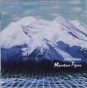

Home Artist links Label link

| Artist: | Julius Dobos |
| Title: | Mountain Flying |
| Label: | Periferic BGCD 051 |
| Length(s): | 65 minutes |
| Year(s) of release: | 1999 |
| Month of review: | 01/2000 |
Line up
Julius Dobos - composer, keyboards, piano
Arnold Antoni - guitars
Barna Gabos - bamboo flutes
Judit Andrejzski - traditional hungarian vocals
Orsolya Winkler - violin
Patrick McMullan - words
Peter Pejtsik - violoncello, orchestration
Marta Sebestyen - vocals
The performing choir is the Budapest Monteverdi Choir led by
Eva Kollar and the performing orchestra is the North Hungarian
Symphony Orchestra led by Laszlo Kovacs.
Tracks
| 1) | Overture | 9.02
|
| 2) | Mountain Flying | 8.29
|
| 3) | Woodland | 8.40
|
| 4) | Mountain Flying II | 5.09
|
| 5) | Adventure | 4.05
|
| 6) | Mountain Flying III | 3.35
|
| 7) | Oriental Voyage | 4.33
|
| 8) | New Pangea | 9.27
|
| 9) | The Last Millennium | 3.38
|
| 10) | Life | 8.37
|
Summary
Julius Dobos is a young composer from Hungary making his debut on the
Periferic label which als ofeatures Solaris and After Crying. It is not his
first album (the first was a Nokia only release).
The music
Overture is not surprisingly the first track. After some stormy winds and
nice keyboards, the choir sets in. The music is wonderfully melodic and
is based on grand sweeping gestures. I Was mostly reminded of Vangelis here,
but the addition of a real orchestra and an actual choir does much to better
the authenticity of the music. Often in this first track the music is very
bombastic and filmic reminding me of Morricone in his better moments
(The Mission is a good reference), but adding keyboards to the spectrum.
The stormy winds also start the second track, the title track (two parts
of this track are to follow later). The music opens quite classically and
on a sad note. After this we get some softly playing sequencers, but the
melody is played on a string instrument. Again, the music is incredibly
melodic, but never too (for me that is) with powerful passages.
Woodland is a more acoustic track: acoustic guitar, (pan) flute again in a
very melodic setting maybe reminding some of Oldfield. The ciassical component
is a bit less present, but also has its say towards the middle of the piece.
In the acoustic parts the music sounds a bit like folk music, but it is never
merry. The song is much less bombastic then the previous tracks, which is good
for variety. The next track is the second part of the title track in which
the vocals figure prominently. The keyboards also have something of TD now
in their early eighties period with quite heavy percussion and choir vocals.
Adventure is mid-tempo piece with a very strong theme reminding me of
After Crying with strong accents in the ehm chorus? Melodic music with drive.
The conclusion to the title track is a keyboardsaffair. The trakc consists
of highpitched tones and is not so melodic. Oriental Voyage is a bit playful
with of course some Asiatic influences. However, the ghost of Morricone is
also not far off. A catchy track. Longest track is New Pangae which opens
soothingly. The continuation is slightly in the folk style with vocals by
Sebestyen and lots of flute while the conclusion also reminds me of the
Western soundtracks of Morricone. It has that same spaceousness and air
of sweeping gestures. The Last Millennium is a short powerful piece rather
Oldfieldian in its guitar work. The closer Life features a recited poem
and for the rest mostly piano althought some synths play around in the back.
A somewhat sad track.
Conclusion
A perfect marriage between classical music and electronic music in the style
of Vangelis. Much better in my opinion than what I've heard of the Greek in
recent years. The combination of the two styles really works well on this
album that should appeal to lovers of Vangelis, filmscores (Morricone) and
possibly also classical composers of the more melodic variety (Dvorak), but,
of course, also lovers of After Crying are invited to take a listen. However
there is no rock on this album. It still comes highly recommended.
© Jurriaan Hage